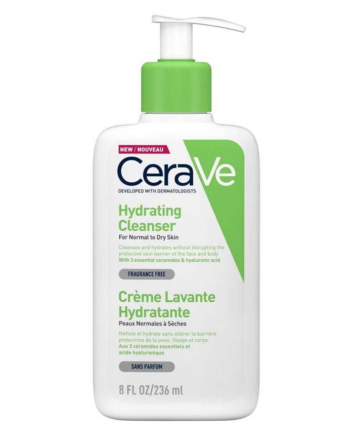
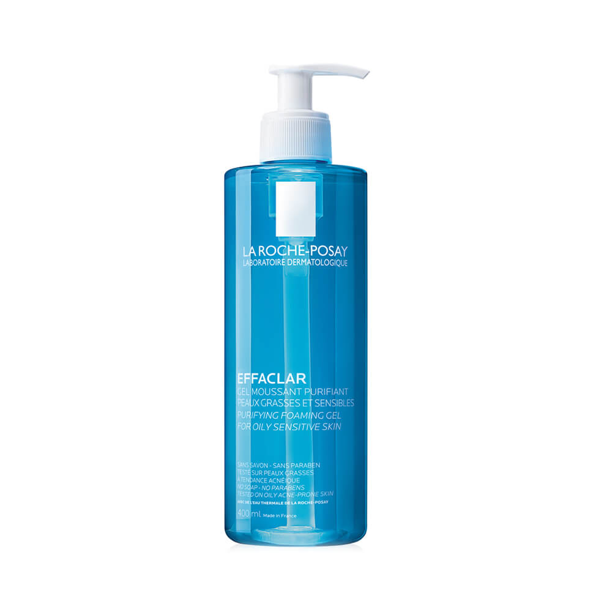
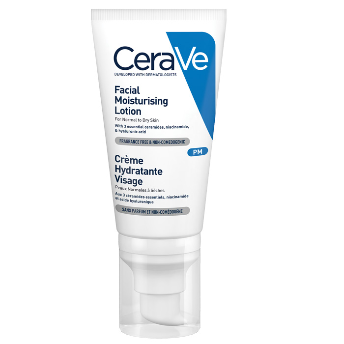
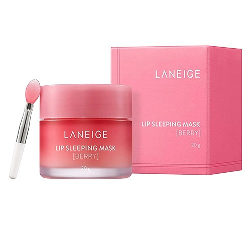

345 Relief Cream is a regenerating ointment gel cream rich in nutrients that skillfully combines ingredients to address blemishes, nourish the skin, and provide soothing care, resulting in a well-rounded skincare solution.
17$

A cleanser can remove dirt, makeup and other debris, but a hydrating cleanser, like CeraVe Hydrating Facial Cleanser, can do all that without disrupting the skin’s natural protective barrier or stripping the skin of its natural moisture.
16$

Facial Cleanser is a daily face wash for normal to oily, sensitive skin. Formulated with La Roche-Posay prebiotic thermal spring water, niacinamide, and ceramide-3, this face wash gently cleanses skin of dirt, makeup, and impurities while maintaining the skin's natural moisture barrier and pH.
30$
345 Relief Cream is a regenerating ointment gel cream rich in nutrients that skillfully combines ingredients to address blemishes, nourish the skin, and provide soothing care, resulting in a well-rounded skincare solution.
17$

MVE Technology: This patented delivery system continually releases moisturizing ingredients for all night hydration Ceramides: Help restore and maintain the skin’s natural barrier Hyaluronic acid: Helps retain skin’s natural moisture Niacinamide: Helps calm the skin Non-comedogenic, oil-free, fragrance-free
15$

e.l.f. Squeeze Me Lip Balm, Moisturising Lip Balm For A Sheer Tint Of Colour, Infused With Hyaluronic Acid, Vegan & Cruelty-free, Strawberry
10$

Vitamin C-rich Berry Mix ComplexTM, containing raspberry, strawberry, cranberry, blueberry extracts erases dry, flaky dead skin on the lips during the night for smooth and supple lips the next morning. A leave-on lip mask that soothes and moisturizes for smoother, more supple lips overnight.
20$